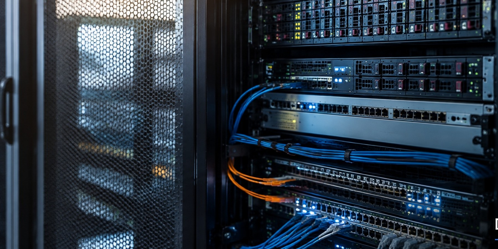

COMMISSIONING UNDER CONTROL
Safe conditions for complex testing.
Large-scale data-centre commissioning involves multiple specialist contractors working across interconnected electrical systems at different stages of completion. Effective operational control is therefore fundamental.
Powertec supports switching, isolation and earthing requirements, electrical safety documentation, work boundaries, network access and active monitoring of personnel operating under safety documents.
Safe people. Controlled systems. Reliable handover.

THE COMPLETE POWER PATH
Beyond the HV network.
Current mission-critical experience includes operational and commissioning interfaces across HV/LV distribution, resilient A/B supply architecture, UPS-supported systems, alternate supplies, transfer arrangements, protection interfaces and mission-critical distribution.
- Sources of supply
- Potential backfeeds
- Isolation requirements
- Earthing arrangements
- Switching boundaries
- Temporary configurations
- Transfer conditions
- Safe restoration
INTEGRATED SYSTEMS TESTING
Operational control through advanced commissioning.
Powertec supports electrical-safety and operational interfaces associated with integrated systems testing, staged load testing, controlled transfer activities, temporary arrangements and final system restoration.
Network Control
Maintain plant status, boundaries and operational configuration.
Testing Interfaces
Coordinate safe electrical conditions for specialist commissioning teams.
Progressive Energisation
Control staged energisation, transfer and restoration activities.
Handover
Support the transition from construction and testing to operational status.